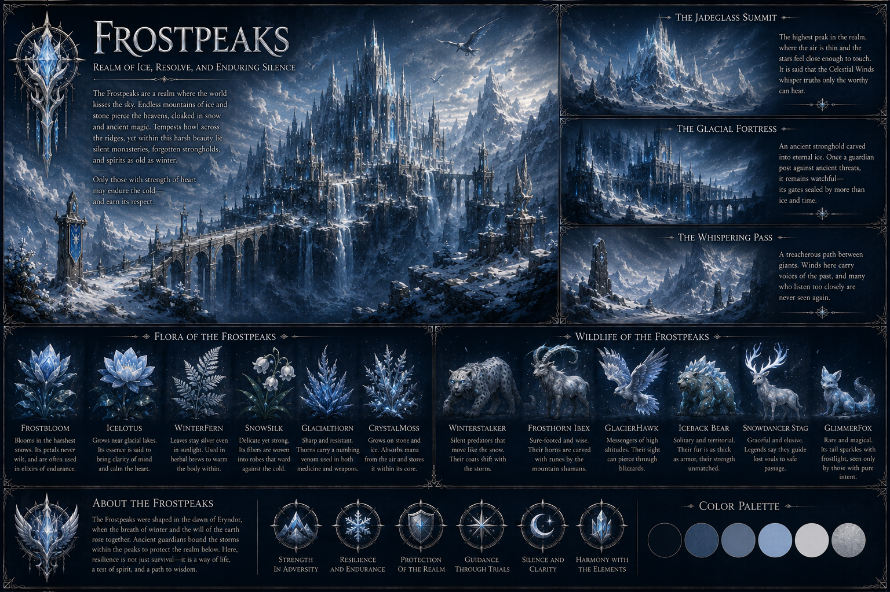
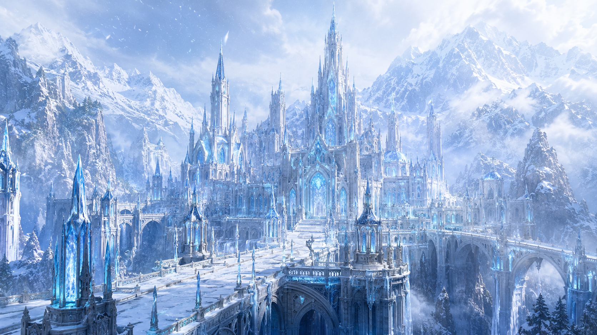
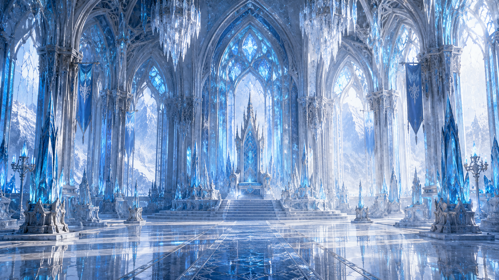
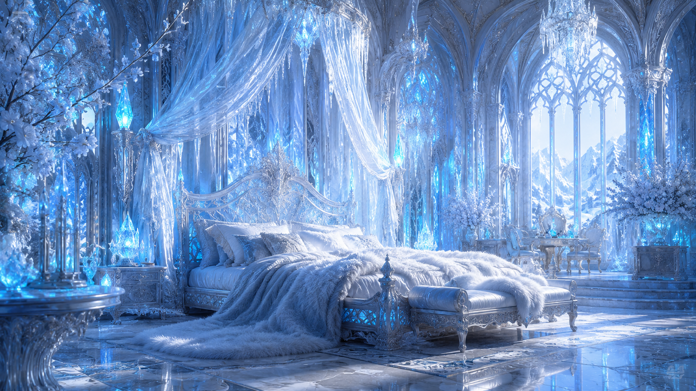
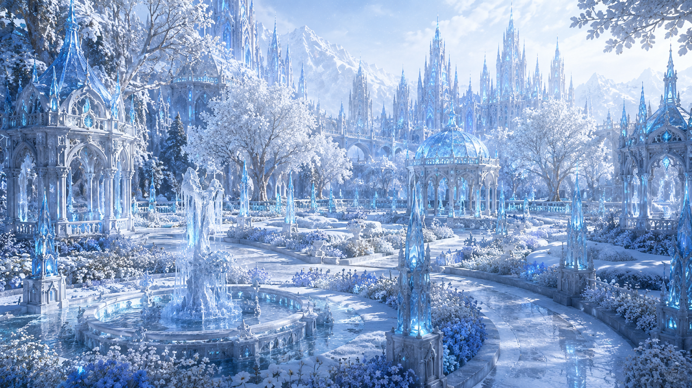
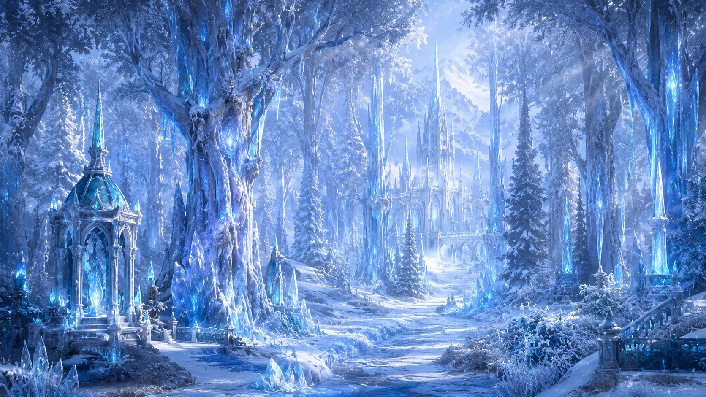
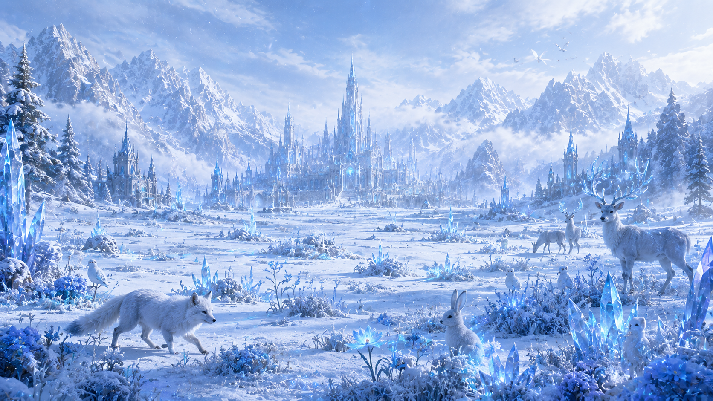
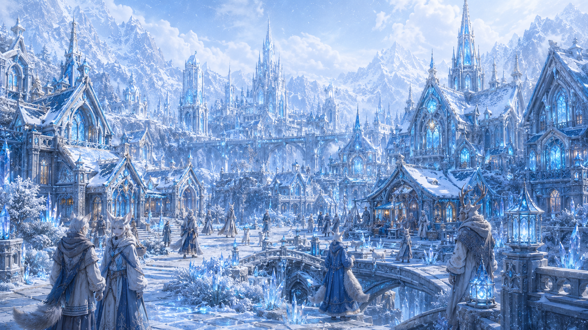
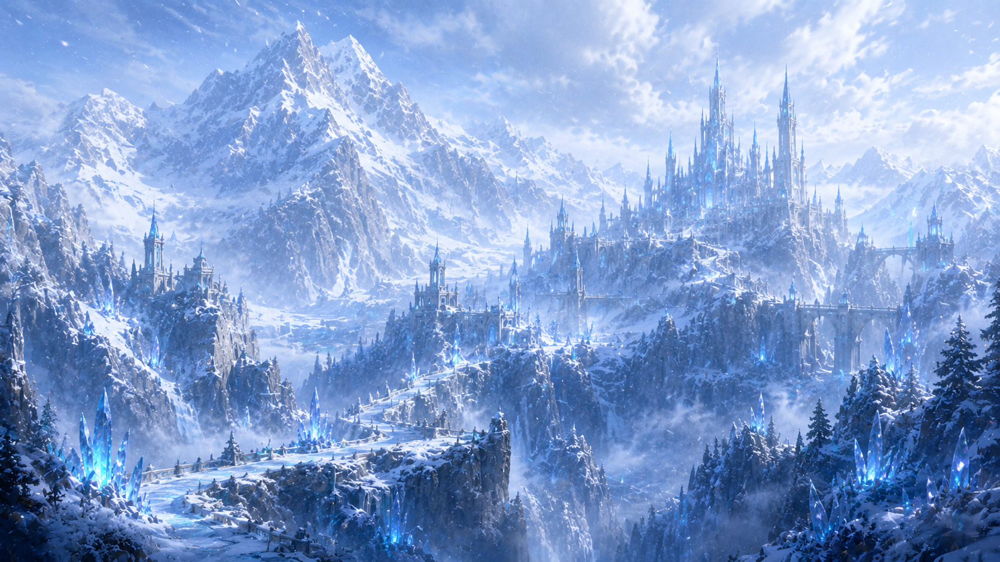
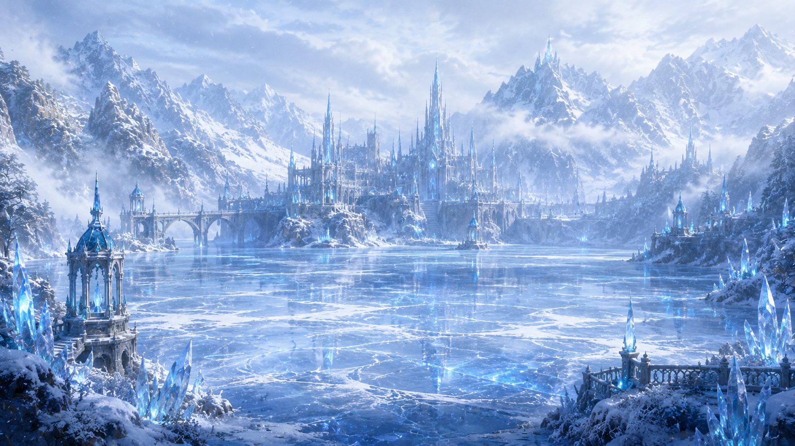

A majestic realm of eternal snow, crystalline mountains and ancient winter guardians, where powerful creatures endure beneath the frozen skies of Eryndor.
Discover FrostpeaksFrostpeaks rises among some of the coldest mountains in Eryndor, a region where snow rarely disappears and
entire valleys remain frozen throughout the year. Settlements were built in protected areas between the peaks,
where walls of stone, ice and crystal shield their inhabitants from violent winter storms.
At the heart of the nation stands Iskaryon, surrounded by frozen forests, crystalline formations and imposing
mountains. Its castles and royal structures reflect the environment around them, combining heavy architecture
with ice-covered towers, frozen gardens and halls illuminated by pale winter light.
The Winter Crown governs a population formed by Humans, Ice Elves and Winter Semi-Humans who have adapted
their lives to the extreme climate. Ice, snow and crystal magic are part of both their culture and their
survival, while the Frost Guardians protect the mountain routes and isolated settlements scattered throughout
the region.
Life in Frostpeaks is tougher than it first appears. Frozen pines, crystal flowers, pale moss and resistant
winter plants grow beneath the snow, while frost wolves, white deer, mountain beasts and large winter birds
inhabit the forests and valleys. Some of the oldest creatures are believed to live far beyond the settlements,
hidden among the highest frozen peaks.

Iskaryon
The Winter Crown
Humans, Ice Elves and Winter Semi-Humans
Ice, Snow and Crystal Magic
Frozen, Snowy and Extremely Cold
The Frost Guardians








